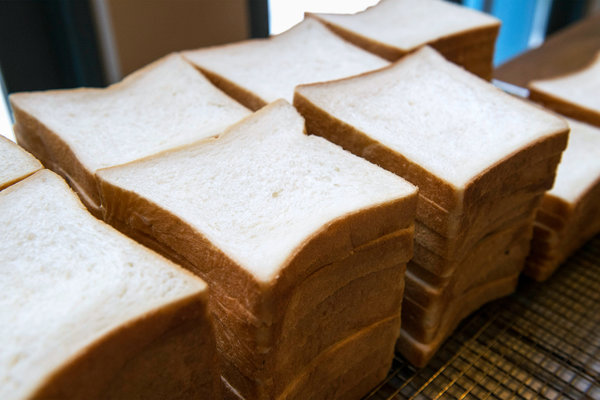

Milk Bread

Ingredients
For the starter
- ⅓ cup/45 grams bread flour
- ½ cup/120 milliliters whole milk
For the dough
- 2 ½ cups/325 grams bread flour
- ¼ cup/60 grams sugar
- 2 teaspoons/7 grams active dry yeast (1 packet)
- 1 teaspoon/4 grams salt
- 1 egg
- ½ cup/120 milliliters warm whole milk, plus extra for brushing on the unbaked loaf
- 4 tablespoons/60 grams unsalted butter, cut into pieces and softened at room temperature, plus extra for buttering bowls and pan
Preparation
- Make the starter: In a small heavy pot, whisk flour, milk and 1/2 cup water (120 milliliters) together until smooth. Bring to a simmer over medium-low heat and cook, stirring often, until thickened but still pourable, about 10 minutes (it will thicken more as it cools). When it’s ready, the spoon will leave tracks on the bottom of the pot. Scrape into a measuring cup and lightly cover the surface with plastic wrap. Set aside to cool to room temperature. (You will have about 1 cup starter; see note below.)
- Make the dough: In the bowl of a stand mixer fitted with a dough hook, combine the flour, sugar, yeast and salt and mix for a few seconds, just until evenly combined.
- Add egg, milk and 1/2 cup starter. Turn the mixer on low speed and knead 5 minutes.
- Add soft butter and knead another 10 to 12 minutes (it will take a few minutes for butter to be incorporated), until the dough is smooth and springy and just a bit tacky.
- Lightly butter the inside of a bowl. Use your hands to lift dough out of mixer bowl, shape into a ball and place in prepared bowl. Cover with a kitchen towel and let rise in a warm place until doubled in size, 40 to 60 minutes.
- Punch the dough down and use your hands to scoop it out onto a surface. Using a bench scraper or a large knife, cut dough in half. Lightly form each half into a ball, cover again and let rise 15 minutes.
- Heat the oven to 350 degrees. In the meantime, generously butter a 9-by-5-inch loaf pan.
- Using a rolling pin, gently roll out one dough ball into a thick oval. (By this time, the dough should be moist and no longer sticky. You probably will not need to flour the surface, but you may want to flour the pin.) First roll away from your body, then pull in, until the oval is about 12 inches long and 6 inches across.
- Fold the top 3 inches of the oval down, then fold the bottom 3 inches of the oval up, making a rough square. Starting from the right edge of the square, roll up the dough into a fat log, pick it up and smooth the top with your hands. Place the log in the buttered pan, seam side down and crosswise, nestling it near one end of the pan. Repeat with the other dough ball, placing it near the other end of the pan.
- Cover and let rest 30 to 40 minutes more, until the risen dough is peeking over the edge of the pan and the dough logs are meeting in the center. Brush the tops with milk and bake on the bottom shelf of the oven until golden brown and puffed, 35 to 40 minutes.
- Let cool in the pan 10 minutes, then remove to a wire rack and let cool at least 1 hour, to let the crust soften and keep the crumb lofty. (If cut too soon, the air bubbles trapped in the bread will deflate.)